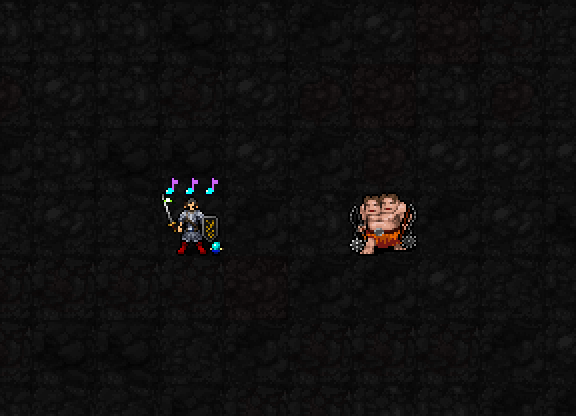

2~3칸 떨어진 적 옆으로 최대2칸 이동하고, 박자를 모두 소모해 한 번 타격합니다.
해금: 신앙★★★75 · 최소 기도술 제한 없음
비용: MP3·신앙3·행동1턴
재사용: 사용 시작부터4턴 → 시전 완료 후3턴

시연은3박자를 준비한 상태로 시작합니다. 현재 실제 권능으로 두 칸 이동하고 타격을 판정한 뒤, 박자가 사라지는 모습을 캡처했습니다. 이동은 게임에서 즉시 처리되며, 중간 경로를 따라 미끄러지는 연속 애니메이션은 아직 없습니다.
몹 주변 파랑·보라 고리는 현재3성 시전 이펙트 초안입니다. 고리 크기가 실제 공격 범위를 뜻하지는 않습니다. 이 권능은 선택한 적 하나를 공격합니다.
권능 피해: 2d(6+⌊I/3⌋)+3×소모 박자
권능 명중: 20+I+2×소모 박자
적의 AC가 피해를 줄이고, 명중 판정에 실패할 수 있습니다.
| 소모 박자 | 피해 범위 · 평균 | 명중 수치 |
|---|---|---|
| 0 | 2~20 · 평균11 | 32 |
| 1 | 5~23 · 평균14 | 34 |
| 2 | 8~26 · 평균17 | 36 |
| 3 | 11~29 · 평균20 | 38 |
위 명중 수치는 명중률(%)이 아닙니다. 피해는 AC 적용 전입니다. 명중 여부와 관계없이 박자·MP·신앙은 소모됩니다.
보이는 적이2~3칸 거리에 있어야 합니다. 적 옆의 빈 바닥 칸을 골라 최대2칸 경로로 접근하며, 벽이나 다른 개체가 길을 막으면 사용할 수 없습니다. 붙잡힌 상태에서는 사용할 수 없습니다. 이미 인접한 적에게는 사용할 수 없습니다.
무기의 일반 공격을 한 번 더 하는 방식이 아니라 별도의 권능 피해입니다. 1성의 일반 근접 공격 피해 보너스를 중복해서 더하지 않습니다. 5성 중 추가 주변 공격은5성 검토에서 따로 확인합니다.
현재3성 이펙트·사용감 검토 중. 이번 전환에서 전투 수치·도트는 변경하지 않았습니다.